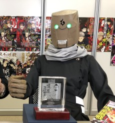
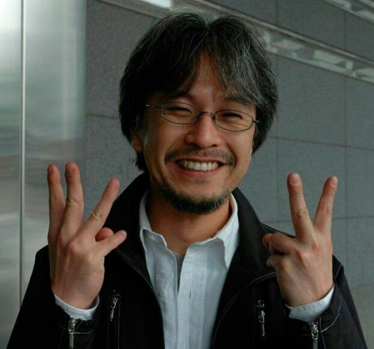
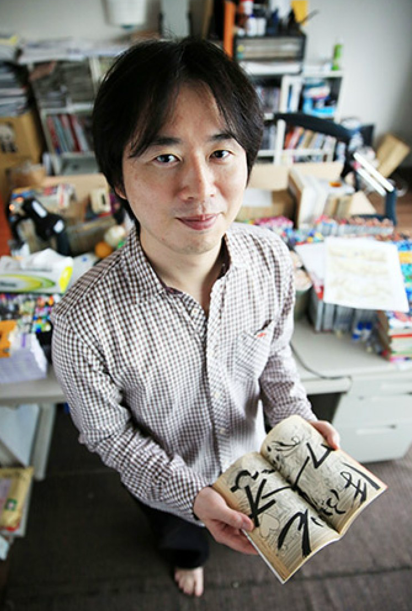

☰
Author's Workspace
These are the authors that have created these masterpieces.
Mastermind behind "My Hero Academia"
This author has had many works serialized in Shonen Jump but his magnum opus is no doubt "My Hero Academia". A Japanese manga artist known for creating the shōnen manga series Ōmagadoki Dōbutsuen, Barrage and My Hero Academia, all of which are or were serialized in Weekly Shōnen Jump. Horikoshi is a graduate of Toho and Nagoya of Arts and is a native of Aichi Prefecture.[1] He was a former assistant for Yasuki Tanaka, creator and of the manga series Hitomi no Catoblepas and Kagijin.
Horikoshi's self-professed favorite and inspirational manga series include Naruto, One Piece, Akira, Tekkonkinkreet, and Boys on the Run. Horikoshi is also an avid fan of American superhero comic books, particularly Marvel Comics.
Architect behind "Jujutsu Kaisen"

This author is shrouded in a veil of mystery. There is little known about the author besides that they are a Japanese manga artist from Iwate Prefecture in Japan and is best known for Jujutsu Kaisen. Gege Akutami is a pen name and the author's real name is unknown.
Designer behind "One Piece"

This author designed the gripping world of One Piece. A Japanese manga artist and the creator of the series One Piece (1997–present). With more than 480 million tankōbon copies in circulation worldwide, One Piece is both the best-selling manga and the best-selling comic series of all time, in turn making Oda one of the best-selling fiction authors.
Genius behind "Boruto & Naruto"

This author penned the innovative genius work of Naruto & Boruto. His best known work, Naruto, was in serialization from 1999 to 2014 and has sold over 250 million copies worldwide in 46 countries as of May 2019.